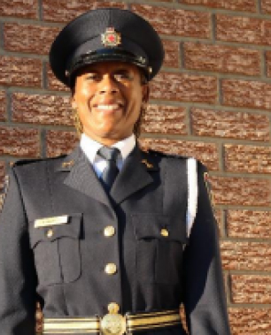

Jacqueline Edwards
President
I am honoured and humbled to serve a third term as president of this incredible association alongside my eight committed, passionate, talented colleagues, who bring an unbelievable set of skills and lived experience to their respective roles. My thanks to: Alain, Dale, Julie, Kenton, Kolin, Mark, and Rebecca.
Collectively we will do our best to ensure that ABLE continues to be recognized as a leading organization, focused on advocating for its membership, increasing representation, recognizing professional excellence, investing in the next generation of leaders, and being a bridge between law enforcement and Black communities, organizations, and key partners.
We know that a more diverse law enforcement and justice sector will not automatically remove the inequities, injustices and systemic racism, however, a more diverse sector will help to dismantle the various forms of discrimination within the criminal justice system.
ABLE is an organization that believes in the importance of investing in youth as they pursue higher education to achieve their goals of working in the justice sector. Supporting our youth will not only lift them up but it will also support our goal of increasing their trust and confidence in the law enforcement community that has been eroded over the years. We will support and empower our youth as they come to terms with the recent and ongoing disproportionate use of force by police and the overrepresentation of Black people in our jails. By believing in our youth and their futures, we will address the underrepresentation of Black and racialized peoples employed across the criminal justice landscape.
A.B.L.E. celebrates the impressive appointments of several Black individuals in the past year. The Honourable Michael Tulloch was appointed the Chief Justice of Ontario and Greg Fergus is the first Black individual to be appointed the Speaker of the House of Commons. We have come a long way in achieving goals of enhancing equity, diversity and inclusivity in the law enforcement community. At the same time, we know that our work must continue. We are here tonight to renew our commitment to achieve our goals and live our values. Our values will transform the criminal justice system and offer fair and equitable opportunities to all.